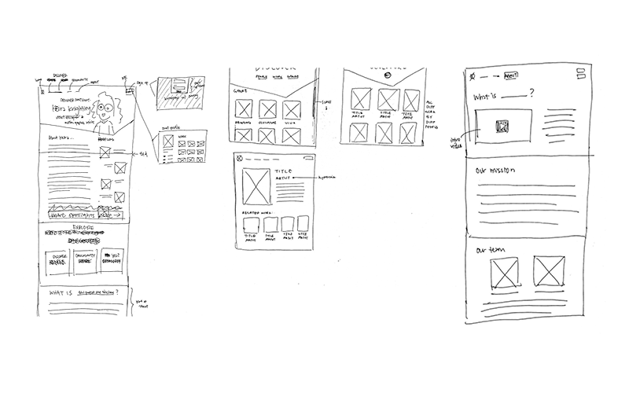
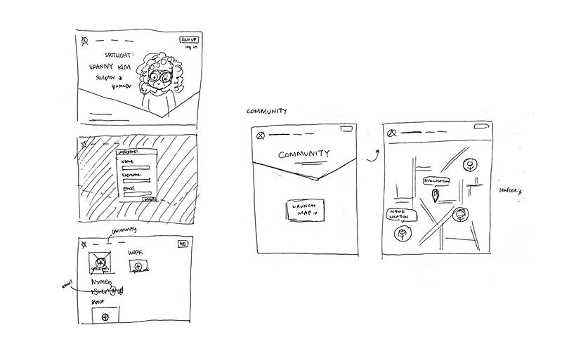

Paper Prototype
 PARTNER: ESTHER LIN
For our first prototype, we drew out the interface for our homepage (including our nav bar and sign up buttons) and each of the tabs: discover, community, and about. We drew interfaces for every page in generally and in low detail. Our first user tester gave us the feedback that we should elaborate more and give a better picture of what we were trying to accomplish. She also suggested we reconsider the spotlight placement on our homepage, but understood ultimately what we were trying to achieve. After the first iteration, we decided that for the second paper prototype, we would make the interfaces more specific to one task. The second paper prototype task was to sign up for an account and customize the profile. After that, the task was to navigate to a space where you could find other artists and designers in your area. While most of the testing went by smoothly, there were many things that we began to consider based on his reactions and feedback. Validation of forms is important in case there are blanks left on the sign up form, and password creation is also important. Additionally, the profile area was a little confusing in terms of which boxes were for uploading work versus for a profile picture. For the community page, the feedback was to make the map show up directly after clicking the "community" tab, rather than having to launch it.